Trudi Connolly
Illuminations / Sacred Paper
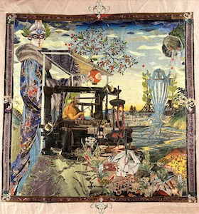
Arachne
No. 2
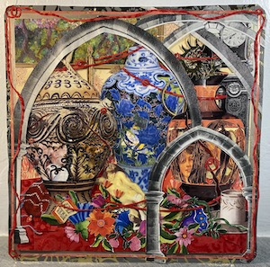
Funeral Urns
No. 18
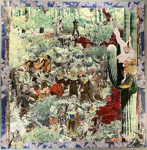
Ariadne auf Naxos
No. 4
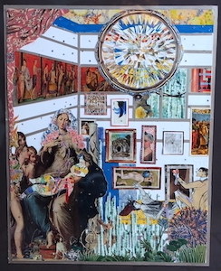
The Artist at Home
No. 15
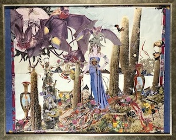
Bayeuse Tapestry
No. 3
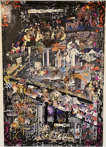
The Capital
No. 1
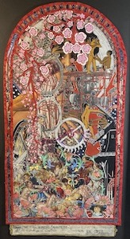
Corps Féminine
No. 20
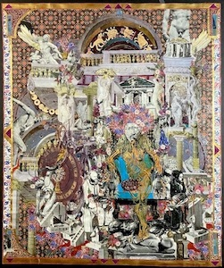
Demon of History
No. 2
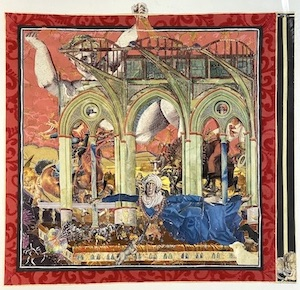
Dream 1
No. 9
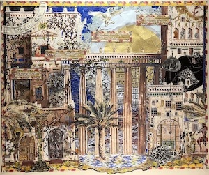
Ethiopian Gate
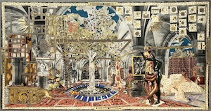
Interior
No. 19
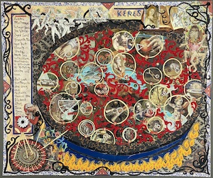
Keres
No. 16
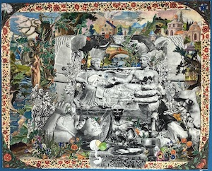
Etruscan Urn for My Mothers Ashes
No. 8
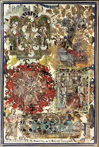
Five Modalities of Conjugal Felicity
No. 12
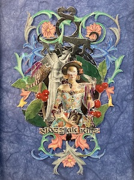
Glass Alchemy
No. 7
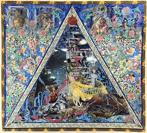
Muses (Wit, Faith, Compulsion)
No. 6
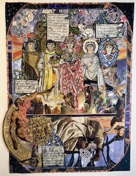
Red Sky
No. 14
Strategies
No. 11
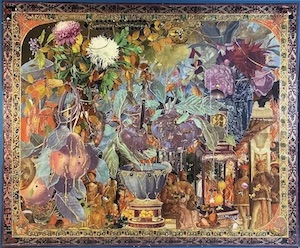
A Truthful Decameron
No. 13